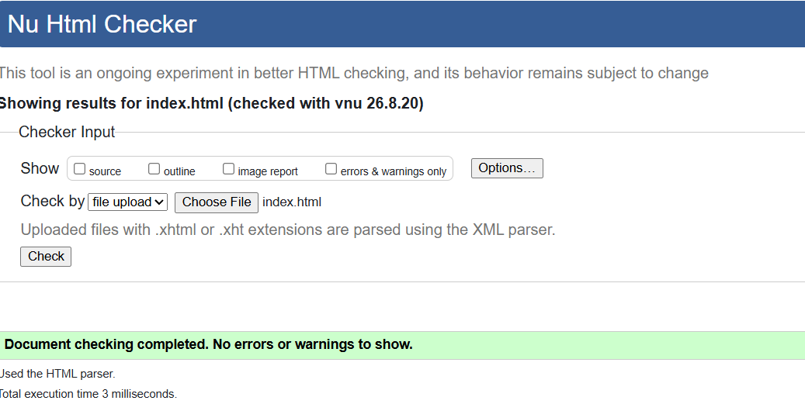
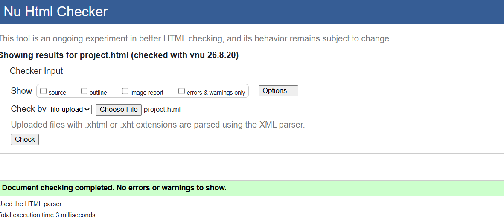
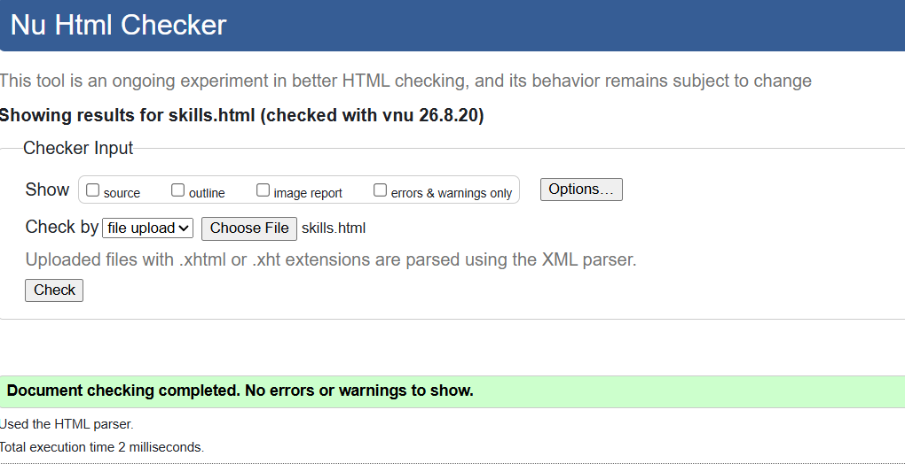
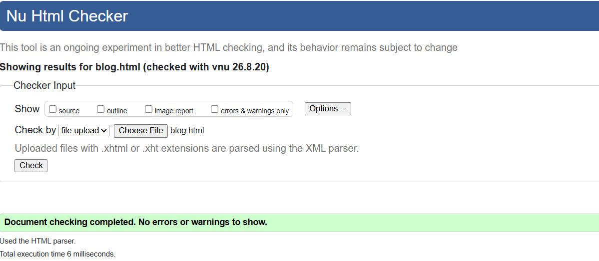
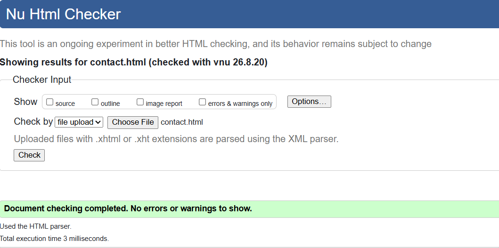
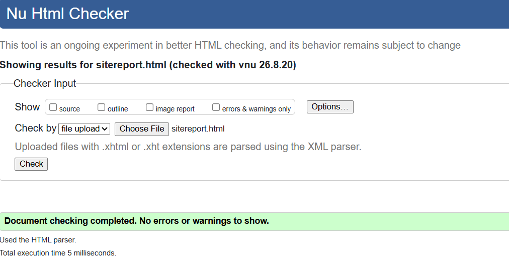
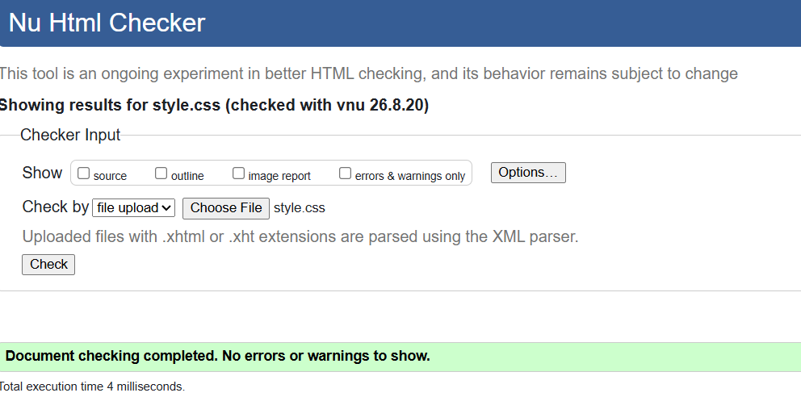

Introduction
This portfolio website was developed as part of the CSY1063 Web Development module. The main purpose of the website is to present my skills, projects, interests and learning experience. I created the website using HTML and CSS and used GitHub to manage the development process.
Learning Experience
At the beginning of the module, I learned the basic structure of HTML documents. I learned how headings, paragraphs, links, images, lists, tables and forms can be added to a webpage. I also learned about semantic HTML elements such as header, nav, main, section, article and footer. Using these elements helped me create a clearer structure for my website.
I then learned how CSS can be used to change the appearance of a website. I used CSS to control fonts, spacing, borders, backgrounds, buttons and layouts. I also learned about Flexbox and CSS Grid. These were useful for arranging the content of my pages.
Problems and Debugging
One of the problems I experienced was making the website responsive. Some parts of the website looked good on a desktop screen but did not fit properly on a smaller mobile screen. I solved this problem by using flexible layouts and CSS media queries. I also tested the website at different screen sizes and changed the CSS when I found layout problems.
Another problem was keeping the navigation consistent between all pages. I checked each HTML file and made sure that the links pointed to the correct pages.
Design Decisions
I chose a simple and clean design because I wanted the content to be easy to read. I used a consistent navigation menu on all pages so that visitors can easily move around the website. I also used the same general typography and spacing throughout the website to create a consistent user interface.
The project page uses a different grid layout from the other pages because the assignment requires the project page to demonstrate a different grid design. I used responsive CSS so that the project cards change their layout on smaller screens.
GitHub Development
I used GitHub to keep a record of my development process. I made regular commits while developing the website. Each commit describes a change made to the project. This allowed me to keep track of the development history and return to earlier versions when necessary.
Reflective Discussion
Overall, this module has helped me understand the basic process of developing a website. I found responsive design and CSS layouts challenging at first, but testing and debugging helped me improve. I also learned that small changes in CSS can have a large effect on the appearance of a webpage. In the future, I would like to improve the website by learning JavaScript and adding more interactive features.
HTML Validation
HTML Validation Screenshot






CSS Validation
CSS Validation Screenshot

Video Demonstration
My video demonstration can be viewed using the link below:
References
- W3C, HTML and CSS standards and validation resources.
- MDN Web Docs, HTML and CSS documentation.